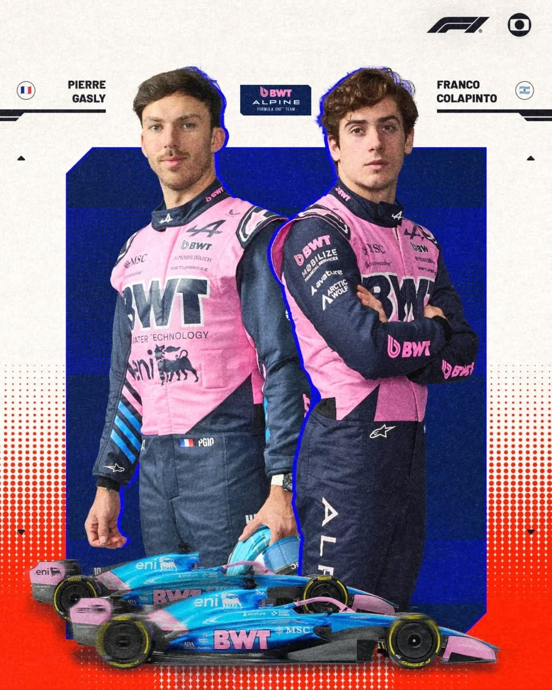
Alpine
Pilotos: Pierre Gasly e Franco Colapinto
A Alpine segue em reconstrução, apostando em uma dupla talentosa para crescer na nova era de regulamentos.
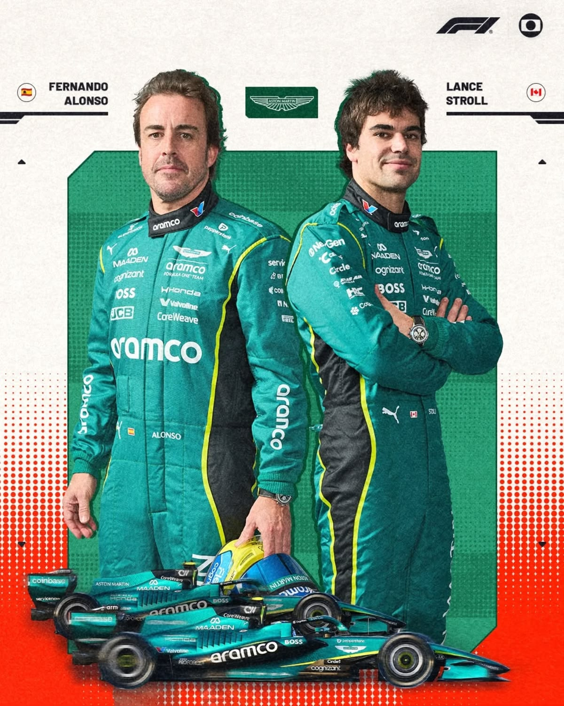
Aston Martin
Pilotos: Fernando Alonso e Lance Stroll
Com Alonso trazendo sua enorme experiência, a Aston Martin busca se consolidar entre as principais forças do grid.
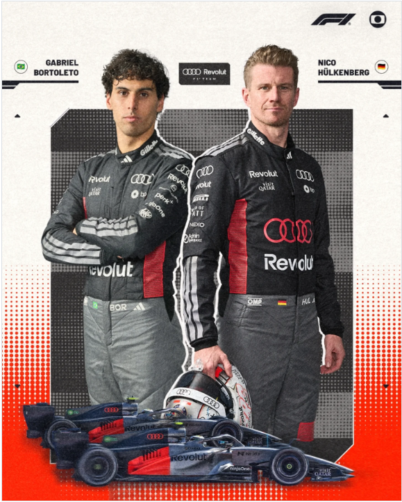
Audi
Pilotos: Nico Hülkenberg e Gabriel Bortoleto
Em sua estreia oficial como equipe de fábrica, a Audi chega com grande expectativa e ambição para o futuro.
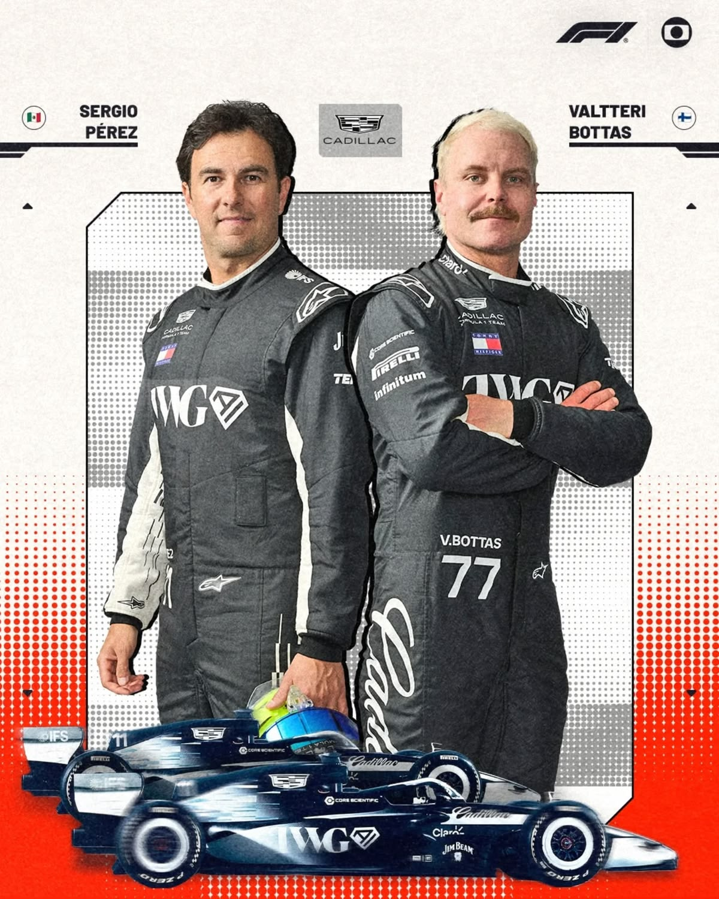
Cadillac
Pilotos: Valtteri Bottas e Sergio Pérez
A grande novidade do grid, a Cadillac estreia na F1 trazendo dois pilotos experientes para liderar o novo projeto.
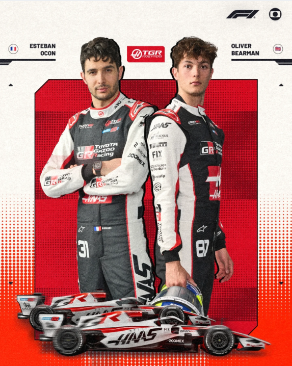
Haas
Pilotos: Esteban Ocon e Oliver Bearman
A Haas combina a experiência de Ocon com o talento promissor de Bearman para surpreender em 2026.
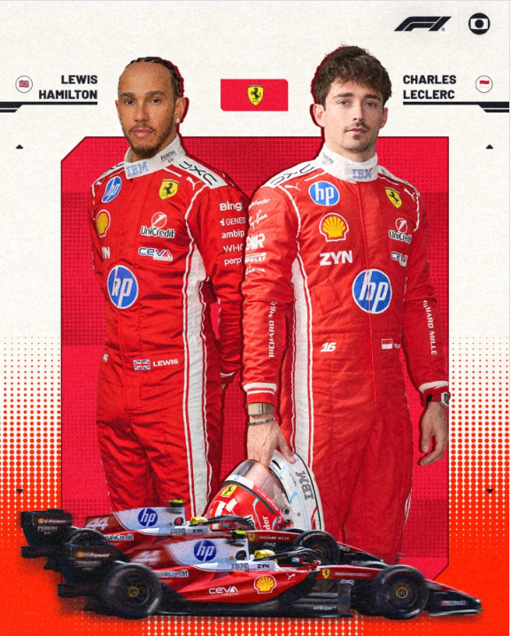
Ferrari
Pilotos: Charles Leclerc e Lewis Hamilton
A Ferrari mistura talento e experiência, unindo a velocidade de Leclerc com a enorme história vencedora de Hamilton.
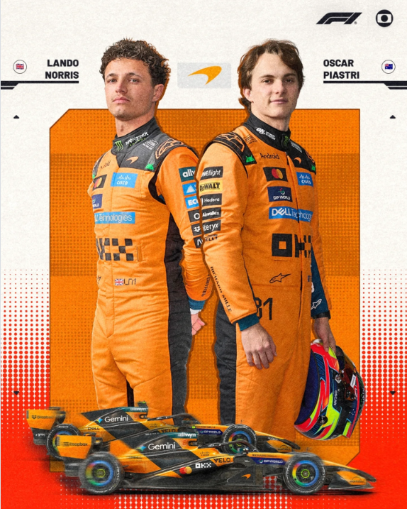
Mc Laren
Pilotos: Lando Norris e Oscar Piastri
A McLaren chega como uma das favoritas, com uma dupla jovem, rápida e muito consistente, pronta para lutar por vitórias e títulos.
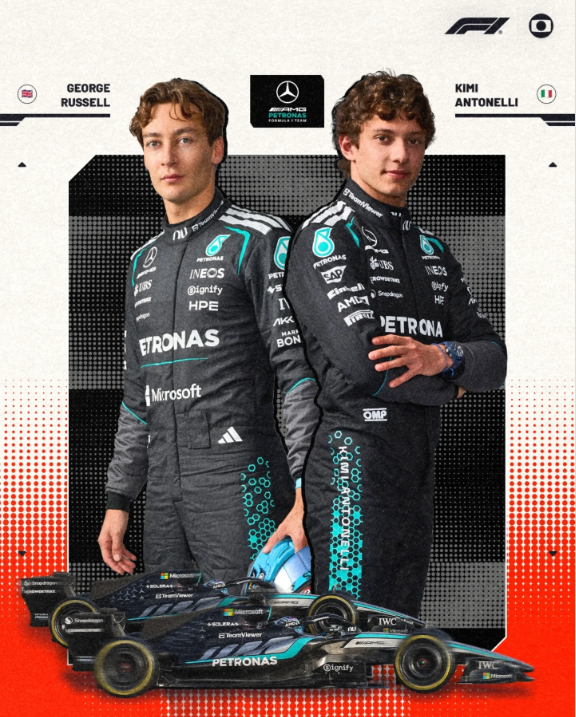
Mercedes
Pilotos: George Russell e Kimi Antonelli
A Mercedes aposta no equilíbrio entre a experiência de Russell e a promessa de Antonelli para voltar ao topo da categoria
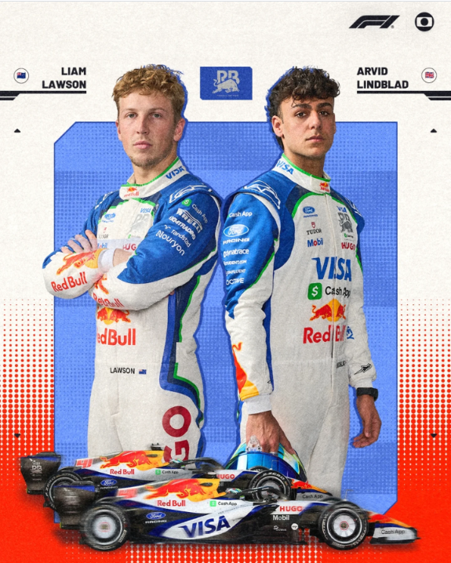
Racing Bulls
Pilotos: Liam Lawson e Arvid Lindblad
Lawson traz experiência e regularidade, enquanto Lindblad estreia na Fórmula 1 como uma grande promessa, a dupla une juventude e talento para buscar bons resultados na temporada.
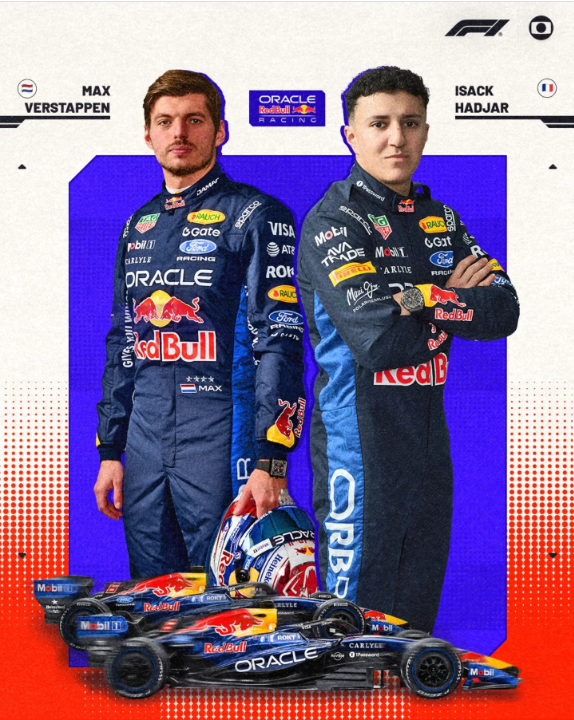
Red Bull
Pilotos: Max Verstappen e Isack Hadjar
A equipe austríaca continua fortíssima, com Verstappen liderando o time e Hadjar trazendo juventude e agressividade.
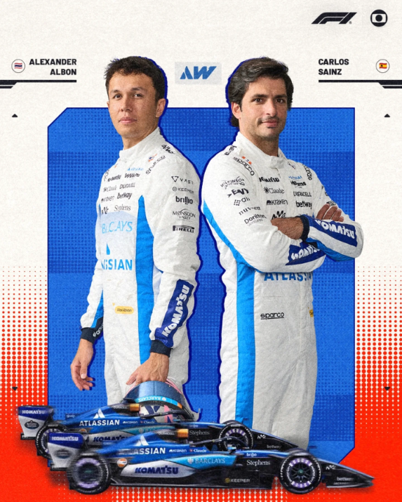
Willians
Pilotos: Alexander Albon e Carlos Sainz
A tradicional Williams vive um grande momento e quer voltar definitivamente à disputa pelas primeiras posições.